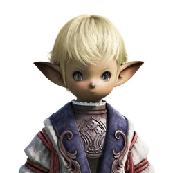

Heading 1
Heading 2
Heading 3
Heading 4
Heading 5
Heading 6
This is a
'span' tag

"The Lalafell are a folk both rotund and diminutive. Small by any race's standards and possessed of a childlike countenance,
it proves difficult for non-Lalafell to gauge an individual's age with any degree of accuracy. Originally an agricultural people
inhabiting the fertile islands of the south seas, they found their way to Eorzea via the burgeoning trade routes. Lalafell are
welcoming of outsiders, and share prosperous relations with all of the other races of Eorzea."
-Official Final Fantasy XIV Website